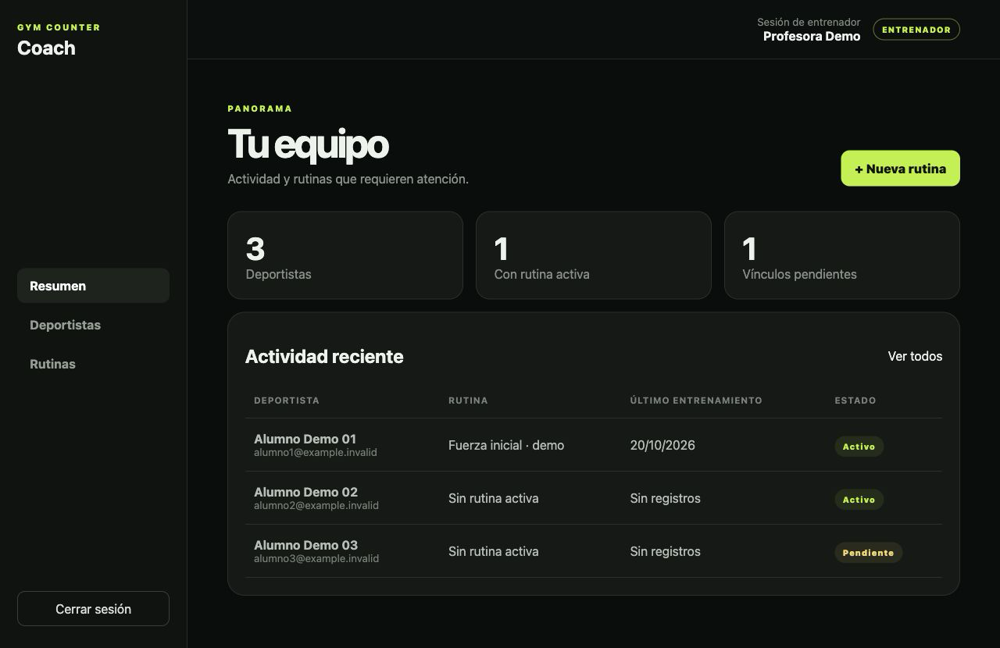
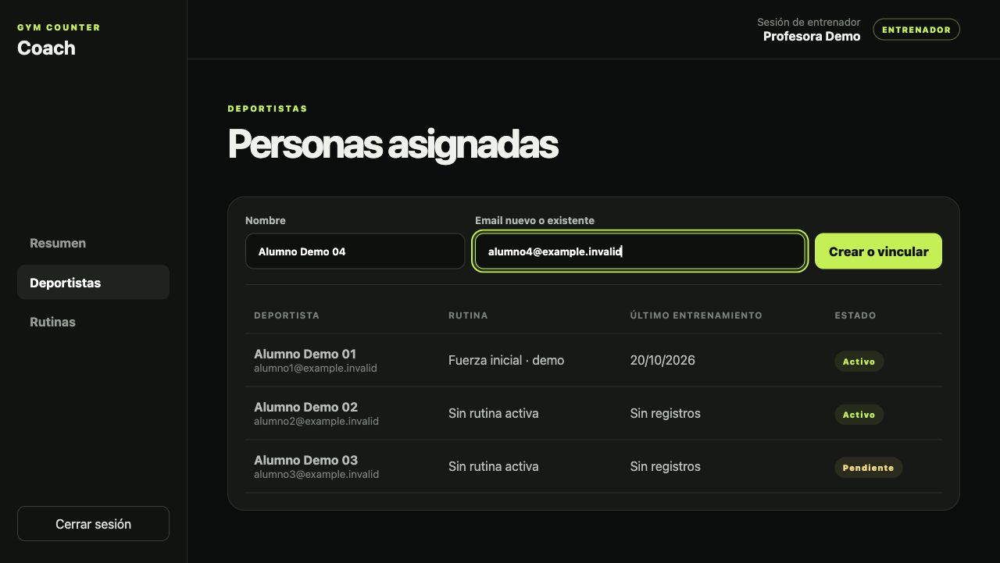
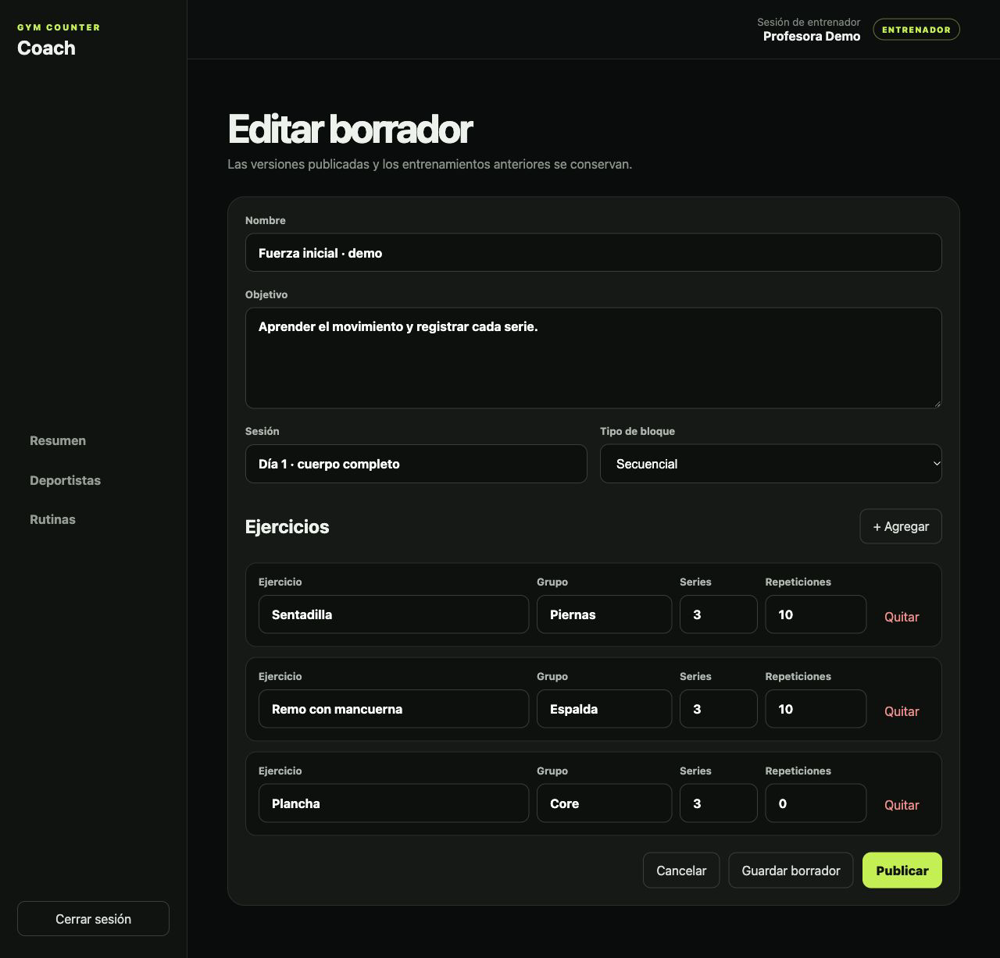
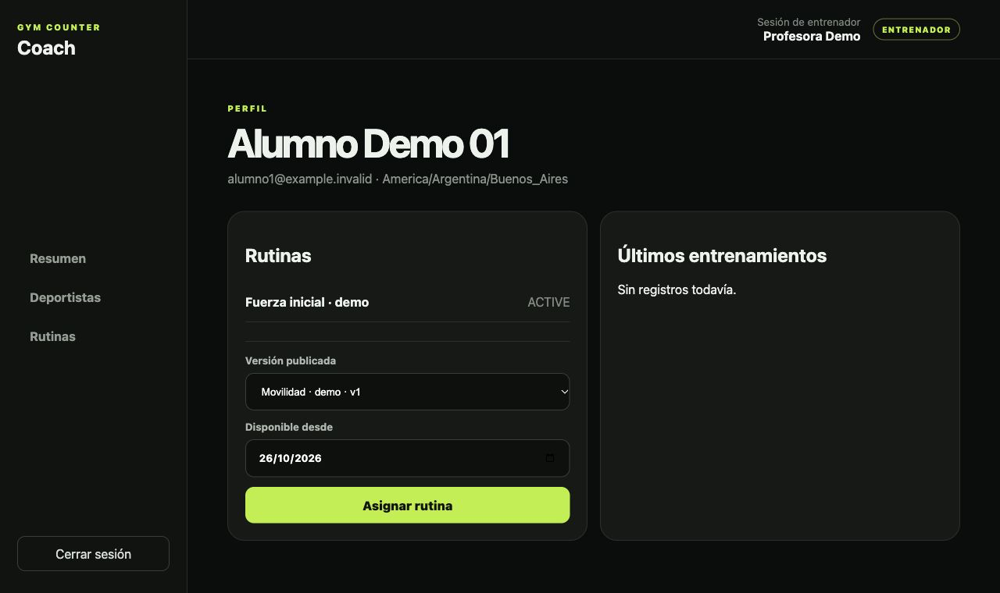

Inventario humano
Las capacidades y prioridades se curan en Markdown. Un nombre de archivo o una casilla del roadmap no prueban implementación. Las capacidades nuevas se incorporan tras una revisión manual.
DESARROLLO ABIERTO A VERIFICACIÓN
Un registro de las capacidades de Gym Counter: implementación, limitaciones y evidencia. Rama por rama, sin dar por hecho la producción.
01 / INVENTARIO CURADO
Leyendo inventario…
02 / LO QUE SIGUE
Sin fechas comprometidas.
Prioridades resumidas del inventario curado.
03 / REGISTRO ACUMULATIVO
La fecha de detección no necesariamente es la fecha real de implementación. Las capacidades que ya existían al iniciar el seguimiento se registran sin fecha histórica. Cada rama conserva su propio registro, incluso si una capacidad cambia de estado.
04 / CÓMO LEER ESTE REGISTRO
Las capacidades y prioridades se curan en Markdown. Un nombre de archivo o una casilla del roadmap no prueban implementación. Las capacidades nuevas se incorporan tras una revisión manual.
Se consultan las referencias remotas configuradas, no el árbol local. Cada evidencia enlaza un commit y líneas concretas. Si cambia el código o su contexto revisado, el estado pasa a «Sin verificar» hasta una nueva auditoría.
Implementación: alcance del código. Verificación: revisión o pruebas realizadas. Integración: presencia en la rama remota. Publicación: distribución de la aplicación. Despliegue: disponibilidad en un entorno. Ninguno demuestra automáticamente los demás.
Los IDs sobreviven a renombres y reordenamientos. La primera detección se conserva por capacidad y rama. No se usa la fecha de un commit como fecha de implementación. El catálogo publicado no acredita despliegues de las aplicaciones.
Del primer vínculo a la última serie.
Una guía para profesores y deportistas.
Demostración, no producción. Las cuatro capturas muestran el portal real ejecutado localmente con personas, emails y rutinas ficticios. Ilustran la interfaz de desarrollo; no acreditan integración, entrega de emails ni disponibilidad pública de la app. Los estados vigentes están en el inventario por rama.
Usá el portal para vincular deportistas, preparar una rutina y asignar una versión publicada. El ejemplo recorre las pantallas sin crear cuentas reales ni enviar correos.

En Resumen ves los deportistas vinculados y su situación.

El correo con Resend es un avance local opt-in: no está desplegado. No des por enviado un email porque se haya creado la invitación.

Una versión publicada no se edita como un borrador. La creación de nuevas versiones y la duplicación tienen su propio estado por rama: no las asumas disponibles por esta demostración.

La fecha de la captura es ilustrativa. El historial de entrenamiento conserva el contexto de la versión asignada.
Esta edición incluye capturas del portal. La guía Android siguiente describe los controles del código revisado, no una sesión probada en un teléfono real ni una captura de iOS.
Iniciá el entrenamiento, ajustá el peso y registrá las series. Podés pausar y reanudar, avanzar al siguiente ejercicio y usar los controles del widget Android. El registro es local; no necesitás mantener la red durante cada serie.
Detener y guardar conserva el entrenamiento. Descartar es otra acción y elimina el entrenamiento que decidís no conservar. Revisá el historial y las estadísticas para consultar el registro.
La sincronización usa una cola local y reintentos. Revisá su estado; tener datos guardados en el dispositivo no acredita que el servidor los haya recibido. Un conflicto necesita revisión, no se debe interpretar como una carga exitosa.
No alternes alumnos en una instalación con datos pendientes. El aislamiento de almacenamiento por cuenta sigue siendo una limitación crítica; desconectar la sesión no separa automáticamente el historial local.
Los gráficos son esquemas explicativos. No representan una ejecución real ni reemplazan las condiciones de cada paso.
Cuenta nueva: activar y elegir contraseña. Cuenta existente: iniciar sesión con la cuenta invitada y aceptar el vínculo.
Cambiar la planificación futura no debe reescribir la versión con la que ya se registró un entrenamiento.
Si falla la red, los datos pueden seguir pendientes. Si hay conflicto, no lo confundas con un registro confirmado. Este flujo no elimina la limitación actual de cambio de cuenta.
El mismo inventario del catálogo, agrupado para consulta y sin depender de los filtros de arriba. Cada función conserva su ID y los estados de ambas ramas.
Cargando listado de funcionalidades…
Capturas reales de una demostración sintética. Consultar procedencia de las imágenes. No hay cuentas reales, datos de alumnos ni conexión a una base de datos en la demo documental.